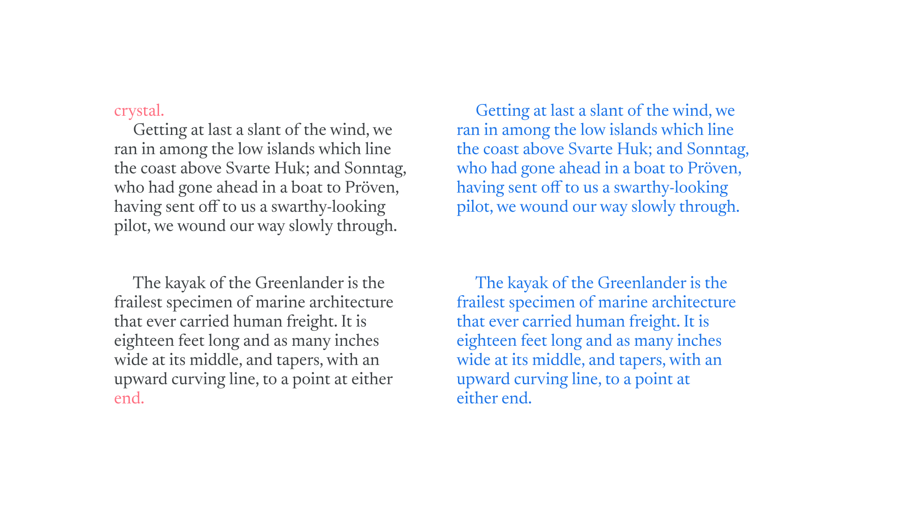

Widows & orphans
By Google Fonts Knowledge contributors · Google Fonts Knowledge.
Original article · Source on GitHub · CC BY-SA 4.0. Text, illustrations and existing credits reproduced from the licensed Knowledge repository. Open Shelf adapted the layout and links; these adaptations are also CC BY-SA 4.0. No endorsement implied.
A widow is the end of a paragraph (a single line of text consisting of one or more words) that appears at the top of a column. An orphan is a single word (or syllable) that sits at the bottom of a paragraph of text.
Additionally, an orphan can refer to the first line of a new paragraph that sits on its own at the bottom of a column of text.

The first example shows a leftover word from the previous paragraph (widow); the second shows a lone word on the end of the current paragraph (orphan). On the right, both examples are corrected.
Text with many widows and orphans typically has poor readability, and they should be avoided if possible. They occur frequently when setting long-form text, so it’s useful to know how to tackle them when they arise. See our article “Avoiding widows & orphans” for more information.